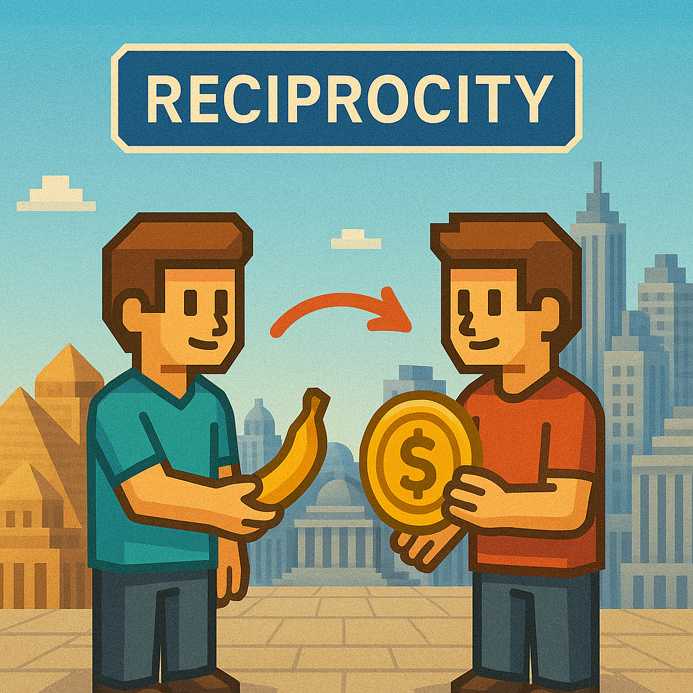

|
Egil Diau I'm a master's student in the Computer Science Department at National Taiwan University (NTU), where I work on embodied intelligence, social understanding, and social simulation. I'm currently advised by Winston Hsu and Min Sun, and I completed my undergraduate studies with a double major in EECS and Economics. |

|
ResearchI work on both biological and artificial intelligence. I began with collaborative projects in embodied and visual intelligence, but my recent work focuses on solo theoretical development and simulation-based modeling—reconstructing the foundations of economics, finance, and society from the bottom up, using behavioral science, anthropology (ancient societies), and computational modeling. |
|
Core Cognitive Functions in Chimpanzees: A Functional Survey with Human Reference
Egil Diau Zenodo, 2025 project page / Zenodo We present a unified six-domain framework of chimpanzee cognition—grounded in long-term observations and experimental evidence—that uncovers the cognitive foundations underlying complex social functions, from tool use and future planning to coalition politics and fairness sensitivity. This framework offers a new foundation for cognitive science, social science, and computational modeling. |
|
|  |
Reciprocity as the Foundational Substrate of Society: How Reciprocal Dynamics Scale into Social Systems
Egil Diau arXiv, 2025 project page (comming soon!) / arXiv Early economies were based on reciprocity—not barter. Modern systems like credit and money can be seen as structural extensions of the same logic. We propose a three-stage simulateable model to explain how large-scale institutions emerge from decentralized reciprocal behavior. |
|
Finance as Extended Biology: Reciprocity as the Cognitive Substrate of Financial Behavior
Egil Diau arXiv, 2025 project page / arXiv We propose a cognitively grounded theory of finance: its origins lie not in institutions or cultural design, but in the fundamental logic of reciprocity. Trade—often seen as the starting point of financial systems—is reframed as the canonical form of reciprocity. From this behavioral substrate, we derive credit, insurance, token exchange, and investment as structured extensions under varying conditions. |
|
|
The Cognitive Foundations of Economic Exchange: A Modular Framework Grounded in Behavioral Evidence
Egil Diau arXiv, 2025 project page / arXiv We propose a cognitively grounded theory of economic exchange—arguing that its origins lie not in barter or symbolic trust, but in reciprocity supported by three minimal, simulateable social mechanisms: individual recognition, reciprocal credence, and cost–return sensitivity. |
A Survey of Useful LLM Evaluation
Ji-Lun Peng*, Sijia Cheng*, Egil Diau*, Sijia Cheng*, Yung-Yu Shih*, Po-Heng Chen, Yen-Ting Lin, Yun-Nung Chen arXiv, 2024 arXiv We survey evaluation methods for LLMs and propose a two-stage perspective: from core language abilities to agent-level capabilities. |
Projects |


|
3D Affordance Reconstruction from Egocentric Demonstration Video
Egil Diau, Yueh Feng Ku, Chung Chi Ming, Ting-Jun Wang, Min Sun, Winston Hsu Tech Report, 2024 We reconstruct 3D affordance structures from egocentric demonstrations to support functional understanding and guide general object use. |
|
Adapt from Jon Barron's template |